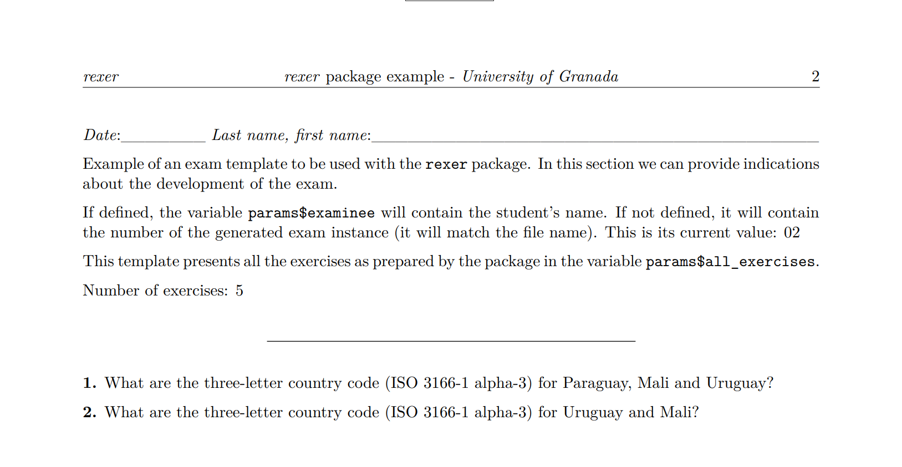
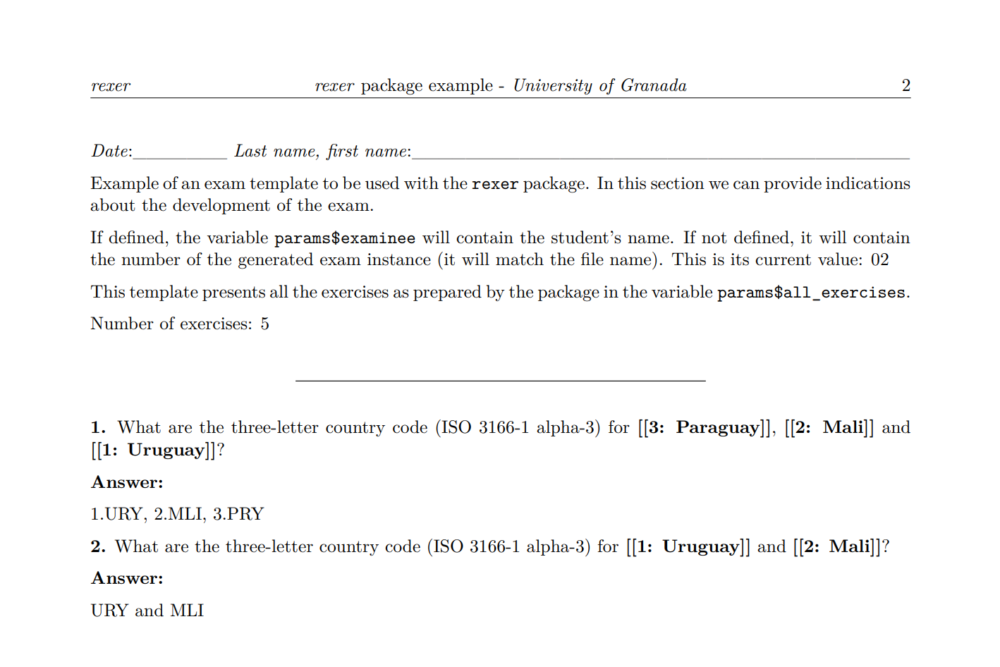

Introduction
The goal of rexer is to facilitate the generation of
exams incorporating random elements to exercises. It can be considered
as a generalization of the string exercises found in the exams
package.
Incorporating randomness within each exercise enhances exam security, ensuring that each student is compelled to focus on their own test rather than attempting to obtain answers from their peers.
Each exercise is a row in a table. It consists of a statement that may have gaps, as many as deemed necessary, and vectors of strings to fill each of those gaps by selecting one from them. It may also include a figure whose name or description can also have gaps. Additionally, we can indicate the answer either in the form of instructions or through a vector of strings associated with the vectors of the gaps.
Documents can be generated in PDF, HTML, or Word format. It produces a version for conducting the assessment and a version that facilitates the correction, linked through a code.
The rest of this document is structured as follows: First, the general process of defining exercises and exams is presented. Next, we show the generation of exam instances, both to provide to the examinees and to support the correction. Finally, the document concludes with conclusions.
Exercises and exams definition process
To define an exam, an Rmd file containing the exam template
is required. Using this template, we instantiate an exam
object. Communication between the object and the template occurs through
parameters that must be included in the template. The values for these
parameters are set within the object using associated definition
methods.
Object creation
The process of creating an exam object using one of the
templates provided in the package is demonstrated below.
library(rexer)
rmd <- system.file("extdata/template01.Rmd", package = "rexer")
ex <- exam(
rmd = rmd,
instances_num = 30,
random = FALSE,
reorder_exercises = TRUE,
select_n_exercises = 5
)From the template, we generate multiple instances of the exam. We can
specify the instances to generate in two ways: by indicating a vector of
examinee names (using the examinees parameter) or by
specifying the number of instances to generate (using the
instances_num parameter). If both are indicated, the
examinee names take precedence. In the example, it is stated that we
want to generate 30 instances of the exam.
We can generate the instances either randomly or sequentially,
depending on the instance number we generate. This is controlled by the
random parameter. The example indicates that generation is
to be performed based on the generated instance number.
Additionally, in each test, we can include the exercises in the same
order as they are defined or in random order. This is indicated by the
reorder_exercises parameter.
Finally, using the select_n_exercises parameter, we can
specify the number of exercises to include in each test. From all
available exercises, the quantity specified in this parameter will be
randomly selected. By default, all defined exercises are included.
In this example, from the exercises provided for the exam, 5 will be selected and randomly rearranged.
Exercise definition
We can define the exercises one by one through the function
define_an_exercise(), or alternatively, in a bulk manner
using the functions define_exercises() (from a data frame),
define_exercises_from_csv(), and
define_exercises_from_excel(). These definition functions
can be conveniently combined.
In the following example, we define an exercise whose random
component is the presented image. Since the image is included in this
package, we need to retrieve its folder using the
system.file() function. If we have the images in a local
folder, it is sufficient to specify its name.
ex <- ex |>
define_an_exercise(
type = 'p',
statement = 'What is the three-letter country code (ISO 3166-1 alpha-3) for
the country represented in the figure below?',
image = paste0(system.file('extdata/figures', package = 'rexer'), '/', '[[1]]'),
image_alt = 'Country outline.',
answer = c('ESP', 'CHL', 'NZL', 'ITA'),
a_1 = c('spain.png', 'chile.png', 'new_zealand.png', 'italy.png')
)The random component of the example is defined by the gap identified
by “[[1]].” We can define as many random components as necessary in the
statement, image, and image_alt
fields by simply incrementing the number in the gap mark.
For each random component, we must specify the options to consider
using additional parameters, which do not necessarily need names but can
be indicated to prevent errors. In this case, in parameter
a_1, we specify a vector of file names for images available
in the package.
Through the ‘answer’ parameter, we can include information to obtain the correct response, or, as in this case, a vector whose options correspond one-to-one with the options of the defined random component, so that the indicated response will be associated with the selected option of the random component.
Finally, by using the first parameter, type, and
assigning it the value “p”, we indicate whether we consider that the
exercise should start on a new page. At the time of exam generation, we
will be able to change this option.
We are now incorporating additional exercises into the exam, based on the definition provided in a CSV file.
example <- system.file("extdata/example.csv", package = "rexer")
ex <- ex |>
define_exercises_from_csv(example)The content of the CSV file is displayed below.
"type","statement","image","image_alt","answer","a_1","a_2","a_3"
"","What is the three-letter country code (ISO 3166-1 alpha-3) for [[1]]?","","","LTU<|>URY<|>MEX<|>GAB","Lithuania<|>Uruguay<|>Mexico<|>Gabon","",""
"","What is the three-letter country code (ISO 3166-1 alpha-3) for [[1]]?","","","?","Lithuania<|>Uruguay<|>Mexico<|>Gabon","",""
"","What are the three-letter country code (ISO 3166-1 alpha-3) for [[1]] and [[2]]?","","","LTU and DMA<|>URY and MLI<|>MEX and BFA<|>GAB and BDI","Lithuania<|>Uruguay<|>Mexico<|>Gabon","Dominica<|>Mali<|>Burkina Faso<|>Burundi",""
"","What are the three-letter country code (ISO 3166-1 alpha-3) for {{[[1]], [[2]] and [[3]]}}?","","","1.LTU, 2.DMA, 3.VCT<|>1.URY, 2.MLI, 3.PRY<|>1.MEX, 2.BFA, 3.BLZ<|>1.GAB, 2.BDI, 3.KGZ","Lithuania<|>Uruguay<|>Mexico<|>Gabon","Dominica<|>Mali<|>Burkina Faso<|>Burundi","St. Vincent & Grenadines<|>Paraguay<|>Belize<|>Kyrgyzstan"
"","What are the three-letter country code (ISO 3166-1 alpha-3) for {{[[1]], [[2]] and [[3]]}}?","","","?","Lithuania<|>Uruguay<|>Mexico<|>Gabon","Dominica<|>Mali<|>Burkina Faso<|>Burundi","St. Vincent & Grenadines<|>Paraguay<|>Belize<|>Kyrgyzstan"
"","What are the three-letter country code (ISO 3166-1 alpha-3) for {{[[1]], [[2]] and [[3]]}}?","","","?","Lithuania<|>Uruguay<|>Mexico<|>Gabon","Dominica<|>Mali<|>Burkina Faso","St. Vincent & Grenadines<|>Paraguay"The table containing these exercises is shown below.
df <- read_exercise_csv(example)
pander::pandoc.table(df, split.table = Inf)| type | statement | image | image_alt | answer | a_1 | a_2 | a_3 |
|---|---|---|---|---|---|---|---|
| What is the three-letter country code (ISO 3166-1 alpha-3) for [[1]]? | LTU<|>URY<|>MEX<|>GAB | Lithuania<|>Uruguay<|>Mexico<|>Gabon | |||||
| What is the three-letter country code (ISO 3166-1 alpha-3) for [[1]]? | ? | Lithuania<|>Uruguay<|>Mexico<|>Gabon | |||||
| What are the three-letter country code (ISO 3166-1 alpha-3) for [[1]] and [[2]]? | LTU and DMA<|>URY and MLI<|>MEX and BFA<|>GAB and BDI | Lithuania<|>Uruguay<|>Mexico<|>Gabon | Dominica<|>Mali<|>Burkina Faso<|>Burundi | ||||
| What are the three-letter country code (ISO 3166-1 alpha-3) for {{[[1]], [[2]] and [[3]]}}? | 1.LTU, 2.DMA, 3.VCT<|>1.URY, 2.MLI, 3.PRY<|>1.MEX, 2.BFA, 3.BLZ<|>1.GAB, 2.BDI, 3.KGZ | Lithuania<|>Uruguay<|>Mexico<|>Gabon | Dominica<|>Mali<|>Burkina Faso<|>Burundi | St. Vincent & Grenadines<|>Paraguay<|>Belize<|>Kyrgyzstan | |||
| What are the three-letter country code (ISO 3166-1 alpha-3) for {{[[1]], [[2]] and [[3]]}}? | ? | Lithuania<|>Uruguay<|>Mexico<|>Gabon | Dominica<|>Mali<|>Burkina Faso<|>Burundi | St. Vincent & Grenadines<|>Paraguay<|>Belize<|>Kyrgyzstan | |||
| What are the three-letter country code (ISO 3166-1 alpha-3) for {{[[1]], [[2]] and [[3]]}}? | ? | Lithuania<|>Uruguay<|>Mexico<|>Gabon | Dominica<|>Mali<|>Burkina Faso | St. Vincent & Grenadines<|>Paraguay |
Each exercise is represented by a row in the table. To depict the options for filling in the gaps, we employ a vector of options, which, to be stored in a single field, is represented as a string using a separator for the vector elements: “<|>”.
If we define the exercises through a spreadsheet, we will need to
manually insert this separator between the different options. If a data
frame is used, we can utilize function vector_to_string()
as a support, which, given a vector, transforms it into a string by
inserting these separators between its components.
As mentioned earlier, the random components of the examples are defined by the gaps identified by “[[n]]” where n increases within each exercise. If we have multiple gaps in the same exercise, we can specify that they be randomly reordered by including them in the markers “{{}},” as seen in various examples in the table. If we use this element, the answer will remain the same, but the order of appearance of the corresponding options may change. The sole purpose of this element is to make it challenging for the examinee to identify identical exercises between their exam and that of another person.
The package provides functions for creating a data frame
(create_exercise_data_frame()), as well as empty CSV and
Excel files (create_exercise_csv() and
create_exercise_excel()) to which exercises can be added
either programmatically or by directly editing them. It also includes
other functions to read these structures into a data frame and to be
able to modify them later if deemed necessary
(read_exercise_csv() and
read_exercise_excel()), and also to save the exercises in
CSV format (write_exercise_csv()).
Definition of answers in exercises
If we look at the first, second, fourth and fifth exercises in the table, we can see that they contain gaps, and the options to consider for each of them have been defined. Regarding the answers, they are formed by the corresponding options for each of the gaps in order: the first option for each of the gaps, the second for each of the gaps, and so on. In other words, if the answer is a vector, there is a correspondence between it and the other vectors to fill the gaps, and only these vectors will be used in the order indicated in the answer (first element of all gaps, second element of all gaps, etc.). However, if the answer is a single element (it can be empty), any combination of the available options to fill the gaps can be considered randomly.
To make it easier to define the answers, we can use the
set_pending_answers() function. If we have indicated the
‘?’ character in the answer column in the data frame, it generates the
answer considering the options of the gaps in the order described in the
paragraph above. Thus, we have to adapt the answer for each combination
of the specified options.
df <- set_pending_answers(df)The table below shows the result obtained from the previous table after applying this function.
pander::pandoc.table(df, split.table = Inf)| type | statement | image | image_alt | answer | a_1 | a_2 | a_3 |
|---|---|---|---|---|---|---|---|
| What is the three-letter country code (ISO 3166-1 alpha-3) for [[1]]? | LTU<|>URY<|>MEX<|>GAB | Lithuania<|>Uruguay<|>Mexico<|>Gabon | |||||
| What is the three-letter country code (ISO 3166-1 alpha-3) for [[1]]? | 1.Lithuania<|>1.Uruguay<|>1.Mexico<|>1.Gabon | Lithuania<|>Uruguay<|>Mexico<|>Gabon | |||||
| What are the three-letter country code (ISO 3166-1 alpha-3) for [[1]] and [[2]]? | LTU and DMA<|>URY and MLI<|>MEX and BFA<|>GAB and BDI | Lithuania<|>Uruguay<|>Mexico<|>Gabon | Dominica<|>Mali<|>Burkina Faso<|>Burundi | ||||
| What are the three-letter country code (ISO 3166-1 alpha-3) for {{[[1]], [[2]] and [[3]]}}? | 1.LTU, 2.DMA, 3.VCT<|>1.URY, 2.MLI, 3.PRY<|>1.MEX, 2.BFA, 3.BLZ<|>1.GAB, 2.BDI, 3.KGZ | Lithuania<|>Uruguay<|>Mexico<|>Gabon | Dominica<|>Mali<|>Burkina Faso<|>Burundi | St. Vincent & Grenadines<|>Paraguay<|>Belize<|>Kyrgyzstan | |||
| What are the three-letter country code (ISO 3166-1 alpha-3) for {{[[1]], [[2]] and [[3]]}}? | 1.Lithuania, 2.Dominica, 3.St. Vincent & Grenadines<|>1.Uruguay, 2.Mali, 3.Paraguay<|>1.Mexico, 2.Burkina Faso, 3.Belize<|>1.Gabon, 2.Burundi, 3.Kyrgyzstan | Lithuania<|>Uruguay<|>Mexico<|>Gabon | Dominica<|>Mali<|>Burkina Faso<|>Burundi | St. Vincent & Grenadines<|>Paraguay<|>Belize<|>Kyrgyzstan | |||
| What are the three-letter country code (ISO 3166-1 alpha-3) for {{[[1]], [[2]] and [[3]]}}? | 1.Lithuania, 2.Dominica, 3.St. Vincent & Grenadines<|>1.Uruguay, 2.Mali, 3.Paraguay<|>1.Mexico, 2.Burkina Faso, 3.St. Vincent & Grenadines<|>1.Gabon, 2.Dominica, 3.Paraguay | Lithuania<|>Uruguay<|>Mexico<|>Gabon | Dominica<|>Mali<|>Burkina Faso | St. Vincent & Grenadines<|>Paraguay |
In the last row of the table, we can observe that, since the gaps have a different number of options, it considers the one with the highest number of options and rotates through the others to generate the answer by combining them.
We can store the result in a CSV file
(write_exercise_csv()) to facilitate the elaboration of the
answers, given the options for each one.
Template definition
An Rmd file containing the exam template is required to
instantiate an exam object. Communication between the
object and the template occurs through parameters that must be included
in the template. The values for these parameters are set within the
object using associated definition methods.
Below are the parameters and their default values specified in the templates included in the package.
params:
exam_number: 1
exam_number_str: "01"
examinee: "01"
exercises: ""
all_exercises: ""
---The parameters exam_number and
exam_number_str take the value of the generated exam
instance number. Parameter examinee contains the examinee’s
name, if specified, or the same value as parameter
exam_number_str if the vector of examinees has not been
indicated. It is necessary to include the value of some of these
parameters in the exam to establish a connection between the exam given
to the examinee and the version where answers or instructions for
correction are included.
Parameter exercises contains a vector with the
statements of the generated exercises, allowing us to iterate through it
and present each exercise according to our convenience, as shown in the
example below.
``{r, echo=FALSE, results='asis'}
for (i in seq_along(params$exercises)) {
q <- paste0('**1.** ', params$exercises[i])
cat(q)
}
``Finally, parameter all_exercises contains all the
statements of the exercises to be presented together; it is an
alternative to presenting the exercises using parameter
exercises. Its usage is demonstrated in the following
example.
`r params$all_exercises`In the templates template01.Rmd and
template01.Rmd included in the package, we can see examples
of parameter usage.
Generation of the exam instances
Once we have defined and configured the exam and the exercises it may
contain, we can generate instances to distribute to the students and
correction support instances using the generate_document()
and generate_correction_document() functions.
ex <- ex |>
generate_document(out_dir = tempdir(), new_pages = 'all') |>
generate_correction_document(out_dir = tempdir(), new_pages = 'none')In both functions, we can specify the folder where we will generate
the instances (parameter out_dir) and if we want to change
the page layout indicated in each exercise (parameter
new_pages): we can specify that each exercise is placed on
a new page (value ‘all’) or that the page changes only when it is
complete (value ‘none’). Using the output_format parameter,
we can specify the output document format (default is PDF).
In this case, they are generated in the same temporary folder, but we must indicate different folders because the corresponding files have the same name.
The result of the second generated exam in both versions is included
in the package, in the files 02.pdf and
02c.pdf.
Below is the beginning of both documents. In the document to facilitate correction, we can see the gaps marked and numbered. In the first exercise, the order of the gaps has been changed, as indicated in the exercise definition, but the answers can be identified by the gap number used in them.

In these examples, we can see that the instance number has been included in the upper-right corner. This number allows us to relate them for correction purposes.
Conclusions
Through the rexer package, we can generate exams with
exercises based on text and images, incorporating random elements. The
exercises are defined in a table that can be edited in a spreadsheet or
generated using R. Multiple options can be defined for each gap in the
exercise statement, and we also have the flexibility to randomly reorder
the gaps if desired. Exercises included in an exam can also be selected
randomly. All these functionalities aim to generate exams with similar
difficulty but different, reducing the likelihood of cheating among
examinees.
Additionally, we can generate a correction-friendly version that may include answers if specified. In this case, we limit randomness based on the number of answers included in the exercise definition.